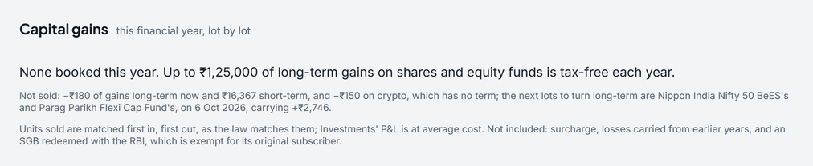

Capital gains on mutual funds and shares, worked through
- Category
- Investing · FY 2026-27
- By
- Reviewed
- Read
- 6 min
Rates and holding periods
| What was sold | Long-term after | Short-term rate | Long-term rate |
|---|---|---|---|
| Listed shares, and funds and ETFs that hold Indian equity | more than 12 months | 20% | 12.5% above ₹1,25,000 a year |
| Other listed units (a gold ETF, an exchange-traded SGB) | more than 12 months | slab rate | 12.5% |
| Foreign shares, international and gold funds, physical gold, the rest | more than 24 months | slab rate | 12.5% |
| Crypto (virtual digital assets) | no long term | 30% | 30% |
The rates and holding periods have applied since 23 July 2024 and were left as they were by Budget 2026. A 4% cess is added to all of them. A gain counts in the financial year of the sale.
First in, first out
When part of a holding is sold, the units sold are the oldest ones, as the Income Tax Department and every mutual-fund statement count them.
So one sale can be part long-term and part short-term. A person's ledger, as Pocket stores it:
| Date | Holding | Entry | Units | Price |
|---|---|---|---|---|
| 3 Mar 2025 | Nifty 50 Index Fund | Buy | 400 | ₹250 |
| 5 Jun 2025 | Gold ETF | Buy | 1,000 | ₹60 |
| 1 Jan 2026 | Nifty 50 Index Fund | Sip | 200 | ₹300 |
| 10 Feb 2026 | Acme Ltd | Buy | 100 | ₹1,000 |
| 15 Jul 2026 | Nifty 50 Index Fund | Sell | 500 | ₹320 |
| 20 Aug 2026 | Acme Ltd | Sell | 100 | ₹1,180 |
| 10 Sep 2026 | Gold ETF | Sell | 1,000 | ₹75 |
Pocket matches each sale to the lots it drew on:
| Holding | Bought | Sold | Units | Cost | Proceeds | Gain | Taxed as |
|---|---|---|---|---|---|---|---|
| Nifty 50 Index Fund | 3 Mar 2025 | 15 Jul 2026 | 400 | ₹1,00,000 | ₹1,28,000 | ₹28,000 | Equity, long-term |
| Nifty 50 Index Fund | 1 Jan 2026 | 15 Jul 2026 | 100 | ₹30,000 | ₹32,000 | ₹2,000 | Equity, short-term |
| Acme Ltd | 10 Feb 2026 | 20 Aug 2026 | 100 | ₹1,00,000 | ₹1,18,000 | ₹18,000 | Equity, short-term |
| Gold ETF | 5 Jun 2025 | 10 Sep 2026 | 1,000 | ₹60,000 | ₹75,000 | ₹15,000 | Listed, other, long-term |
The fund's sale of 500 units took all 400 units from March 2025, held over 12 months, and 100 of the 200 bought in January 2026, held under 12 months. One sale, two terms. The 100 units left keep their January 2026 cost.
The year's tax
| Bucket | Gain | Rate | Tax |
|---|---|---|---|
| Equity, short-term | ₹20,000 | 20% | ₹4,000 |
| Equity, long-term | ₹28,000 | 12.5% above ₹1,25,000 | ₹0 |
| Gold ETF, long-term | ₹15,000 | 12.5% | ₹1,875 |
| Cess, 4% | ₹235 | ||
| Tax on the year's gains | ₹6,110 |
The equity long-term gain of ₹28,000 is inside the year's ₹1,25,000, so it is taxed at nil; the room it leaves is worked through in the ₹1.25 lakh LTCG room.
What Pocket cannot know, and says
- A fund's holdings, when its name does not tell: it is counted as "other", long-term after 24 months.
- Equity bought before 1 February 2018, whose cost is "grandfathered" at its 31 January 2018 price.
- Losses carried forward from earlier years, surcharge, and a Sovereign Gold Bond redeemed with the RBI by its first holder, which is exempt.
How Pocket works it out
Pocket's Tax page replays your ledger first in, first out.
It lists each lot each sale drew on, with its term and gain, sets losses off where the law allows, and adds the year's capital-gains tax to the estimate. Investments' profit and loss stays at average cost, and the Tax page says which basis each figure is on. It is a planning estimate, not a tax return: the Income Tax Department and a chartered accountant have the final word.

- The ₹1,25,000 of long-term gains that is tax-free each year; none is booked yet.
- Units sold are matched first in, first out; what is not included is named.
Questions
Which units are sold first?
The oldest. Units sold are matched first in, first out, for shares and mutual-fund units alike. In the example the fund's 400 units bought on 3 Mar 2025 go first, then 100 of the 200 bought on 1 Jan 2026.
When is a gain on an equity fund long-term?
When the units were held for more than 12 months: sold after the anniversary of their purchase, not on it. Long-term equity gains are taxed at 12.5% on what is above ₹1,25,000 in the year; short-term at 20%.
How is a debt fund taxed?
A debt fund bought on or after 1 April 2023 is taxed at the slab rate however long it is held. Pocket counts a fund whose holdings it cannot tell as "other" and says so.
Does a loss lower the tax?
A short-term loss is set off against any gain. A long-term loss is set off only against long-term gains. What is left can be carried forward for eight years when the return is filed in time.
Sources
- Income Tax Department: the Acts, rules, circulars and its own tax calculator, at incometaxindia.gov.in
- Income-tax Act, 2025, which replaces the Income-tax Act, 1961 from 1 April 2026 (FY 2026-27); the 1961 Act's section numbers are given too, as most forms and payslips still use them
- Finance Act, 2025: the new regime's slabs and the ₹12 lakh rebate, from FY 2025-26; and Finance Act, 2026 (Budget 2026), which left the slabs, the rebate and the surcharge as they were for FY 2026-27
- Income-tax Act, 1961, sections 111A and 112A, and the Income-tax Act, 2025's sections in their place: equity short-term and long-term gains, and the ₹1,25,000 a year
- Finance (No. 2) Act, 2024: the rates and holding periods from 23 July 2024
Previous guide: 80C and ELSS within the ₹1.5 lakh limit